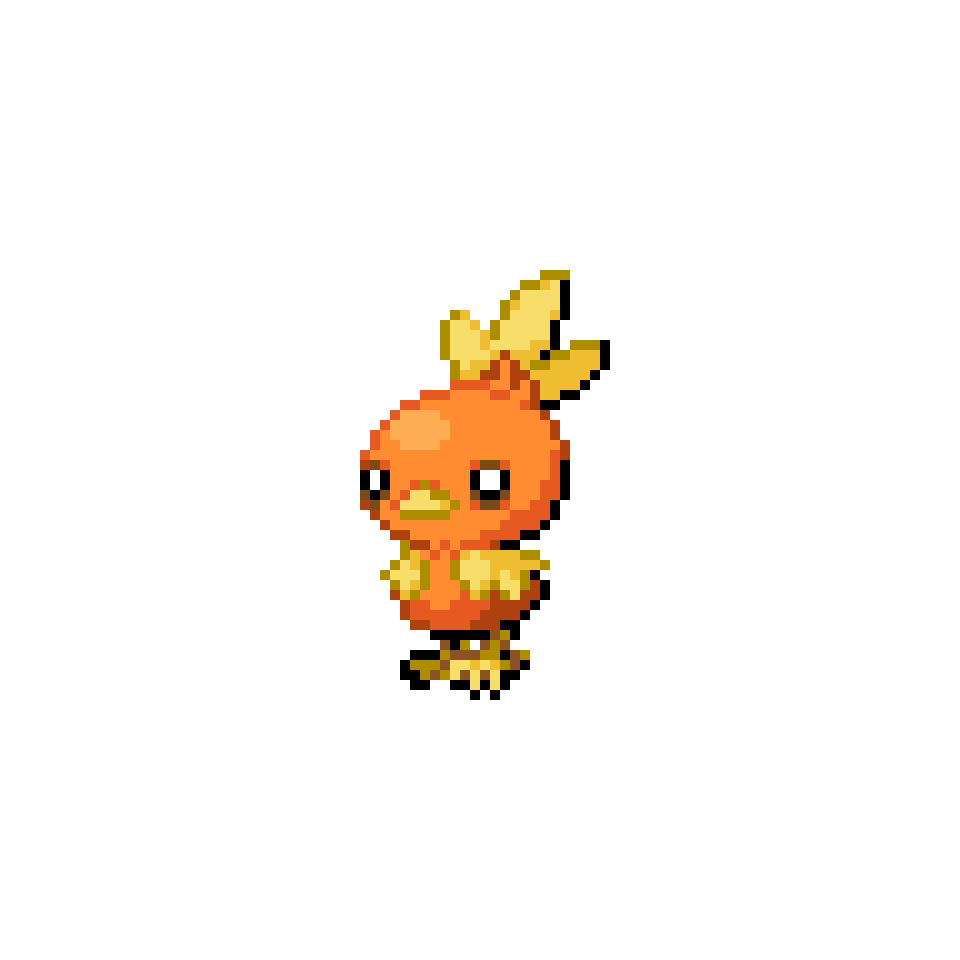
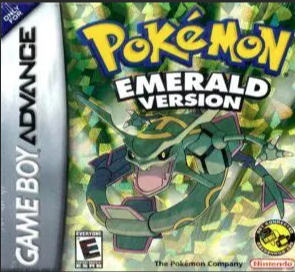
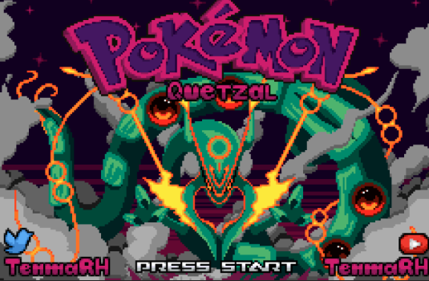
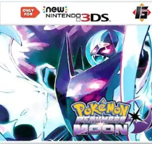
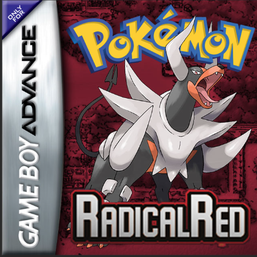

Desde que me lembro eu ja acompanhava a fraquia de pokemon
e sempre gostei muito, dos jogos, do anime e a comunidade.
A minha primeira interação com pokemon foi vendo a serie do canal coisa de
nerd apresentado por um youtuber chamado leon, a serie se tratava do jogo
pokemon go onde o leon junto com seus amigos saiam para caçar os pokemons,
e foi ai que eu me interessei pela franquia, depois disso eu comecei a
jogar os jogos de pokemon, e a assistir o anime, e a participar da
comunidade, e até hoje eu sou um grande fã de pokemon.


O meu jogo favorito é o pokemon emerald de primeiro momento jogando esse
jogo eu joguei por um site de navegador que digamos que não era muito
original.
Mas gostei muito de jogar esse jogo e depois disso foi só para trás
hoje em dia faço varios desafios como nuzlocke, monotype e hacks mais
dificeis por exemplo pokemon radical red, pokemon quartzel, pokemon
penumbra moon esses são algumas hacks que joguei.
Eu tambem gosto de jogar pokemon showdown, é basica mente uma plataforma
de batalhas competivas ou casuais, mas o formato dele não é igual ao
competivo oficial da franquia.
a franquia usa o formato "double battle" onde você tem dois pokemons em
campoe nesse formato tem varias interrações entre as duplas, já o pokemon
showdown tem o formato "single battle" onde você tem apenas um pokemon em
campo, e nesse formato tem varias interrações entre os pokemons, e eu
gosto muito de jogar esse formato.

